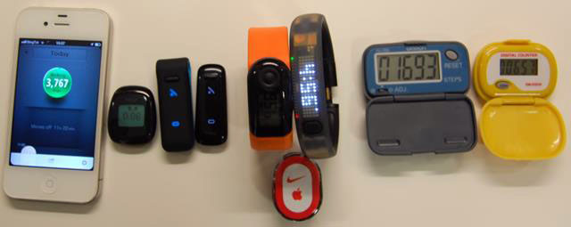
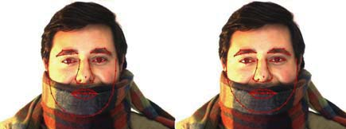

Publications:
 |
Yu Li, Dongbo Min, Minh N. Do, Jiangbo Lu |
 |
Yu Li, Robby. T. Tan, Xiaojie Guo, Jiangbo Lu, Michael S. Brown |
 |
Yu Li, Dongbo Min, Michael S. Brown, Minh N. Do, Jiangbo Lu |
 |
Yu Li, Robby T. Tan, Michael S. Brown |
 |
Yu Li, Fangfang Guo, Robby T. Tan, Michael S. Brown |
 |
Yu Li, Michael S. Brown |
 |
Yu Li, Michael S. Brown |
|  |
Fangfang Guo,Yu Li, Mohan Kankanhalli, Michael S. Brown |
 |
Junhong Gao, Yu Li, Tat-Jun Chin, Michael S. Brown |
|  |
Jiani Hu, Yu Li, Weihong Deng, Jun Guo, Weiran Xu |